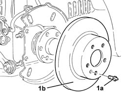

3310B52 REAR BRAKE DISCS - R+R WITH BRAKE CALIPERS REMOVED
- Path
- Procedures > 33 BRAKING SYSTEM > 3310 DISC BRAKES > 3310B REAR DISC BRAKES > 3310B52 REAR BRAKE DISCS - R+R WITH BRAKE CALIPERS REMOVED
- Kind
- repair procedure (removal / refitting; the operation number is the code)
- Applies to
- all engines; all production periods
- Interactive page
- https://sloeber94.github.io/elrnDB-aGt/en/#/125001328
Applies to: all engines; all production periods
 Removing
Removing
 Refitting
Refitting1. Undo the bolt (1a) and remove the rear brake disc (1b).

Applies to: all engines; all production periods
Refitting
RemovingPlace the rear brake disc back in its housing and fix it tightening the pin to the recommended torque.
 | Fastening | Component | Ø | Value (daNm) |
|---|---|---|---|---|
- | Pin | FRONT BRAKE DISC. | M8 | (Wheel hub side) 1.0 ÷ 1.4 |